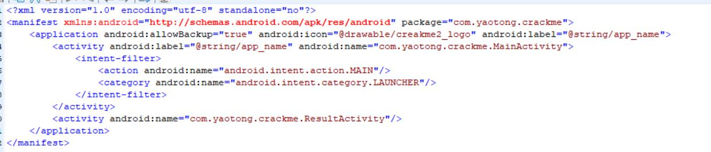
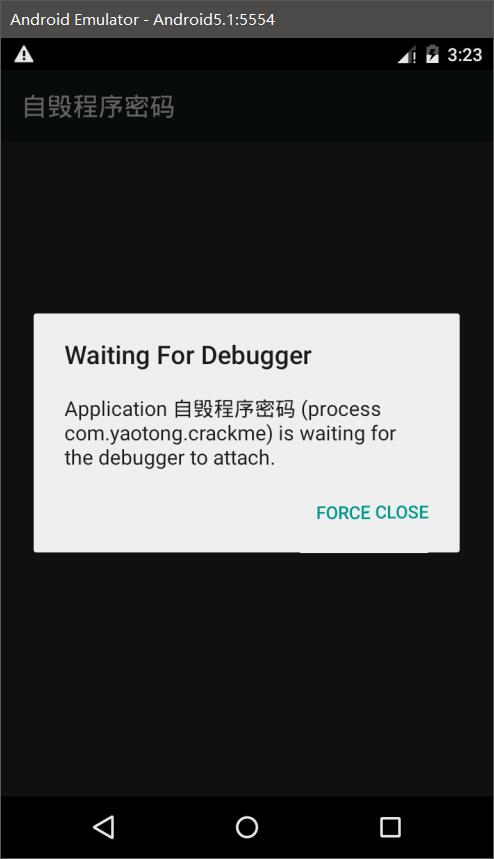
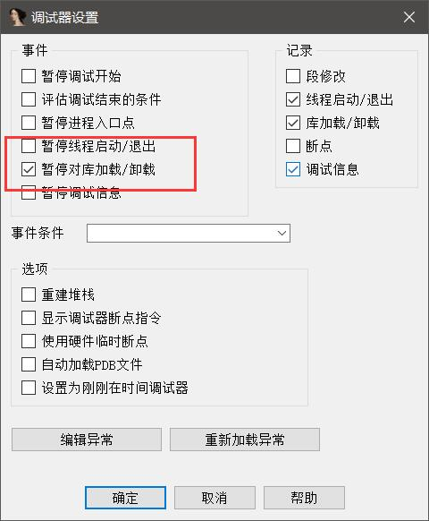
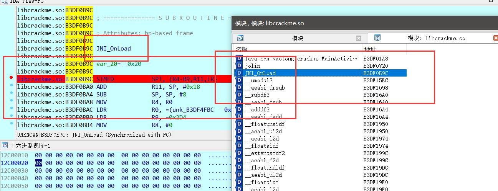
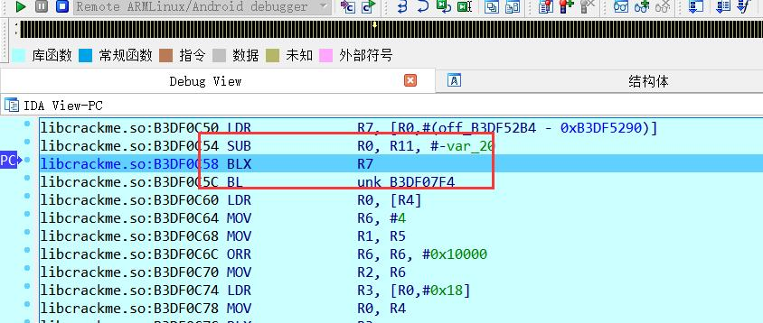
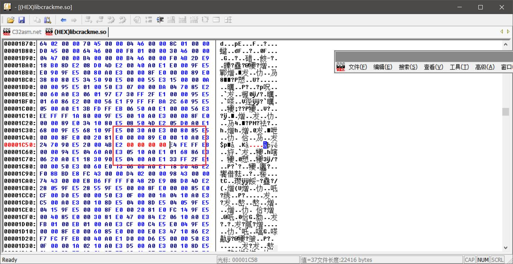
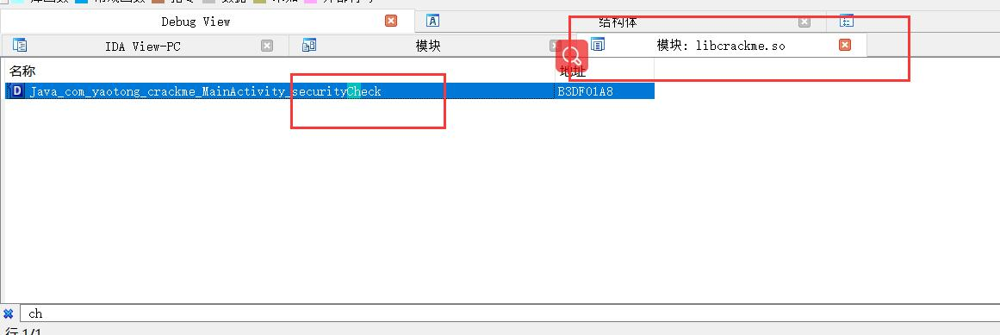
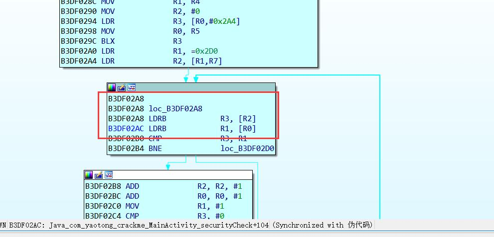
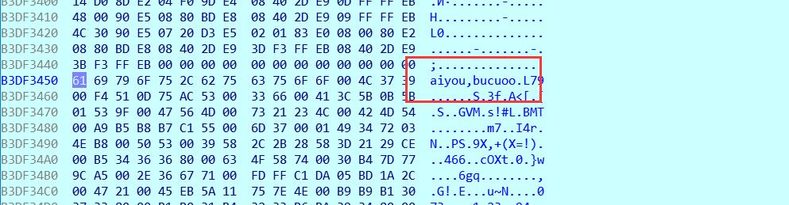

Android反调试
主要是用来防止IDA进行附加的，主要的方法思路就是，判断自身是否有父进程，判断是否端口被监听，然后通过调用so文件中的线程进行监视，这个线程开启一般JNI_OnLoad中进行开启的。
过反调试的话呢，就要把相关的函数进行NOP掉，直接将这几个字节改为00就可以了。
示例
首先反编译一下：

发现自带不可以调试，我们给他增加上：android:debuggable="true"在application的节点中，然后进行编译，签名，安装。
然后打开IDA进行附加：
- 常规的运行服务器，转发端口
- 然后使用调试模式进行运行：
adb shell am start -D -n com.yaotong.crackme/.MainActivity
 - 运行之后，使用IDA进行附加，附加的时候正常操作，但是进去之后我们需要选择一下：
在调试器的调试器选项中设置：

我们勾选上在载入动态库的时候断下。 - 然后点击运行，之后就会不动，这个时候我们用jdb绑定端口（ddms需要打开的情况下使用8700端口），使用命令：
jdb -connect com.sun.jdi.SocketAttach:hostname=127.0.0.1,port=8700然后程序就会断下，因为在加载so文件。 - 然后我们一次运行就查看是否是我们的so被载入，我们的so文件名是：libcrackme.so
- 当被载入的时候，我们就选择在JNI_OnLoad中进行下段。
 - 然后我们慢慢运行，直到我们运行至BXL R7的时候，IDA自己就掉了，所以我们可以推断，这个BLX跳转是反调试我们的IDA，这个时候我们就可以使用十六进制修改器修改我们的程序，将这个BLX R7改为00000000
 - 转到十六进制视图，找到这个语句：37 FF 2F E1这四个字节我们就可以在十六进制修改器中修改为00 00 00 00.
 - 然后重新编译。
这个时候我们重新安装运行，我们还是用调试模式运行：adb shell am start -D -n com.yaotong.crackme/.MainActivity，应该也不需要了，因为反调试让我们给nop掉了，我们这个时候运行，发现程序正常被IDA附加了。
java分析
反编译的java伪代码如下：
1 | public class MainActivity |
载入时候的，发现按钮被点击之后，调用了securityCheck这个方法，这是个本地函数，我们在IDA中进行寻找：

看一下IDA给我们的伪代码：
1 | signed int __fastcall Java_com_yaotong_crackme_MainActivity_securityCheck(int a1, int a2, int a3) |
很直观，和流程图中的差不多，前面几个是if语句，可能在操作一些加密之类的东西，不是很重要，但是我们发现最后返回的是根据V8和V0进行判断的，在java层我们也分析道我们要的就是返回值，看最后的循环语句，可以清楚的发现，其实就是就是一个类似于strcmp的一个函数，每一个字符进行比较，如果有一处不一样，就跳出循环，否则都一样的话呢，返回v8，这个是1，这下就好看了，我们有两种方法，获取到v5的值，这个就是注册码，或者是将这个返回修改一下也是可以的。
获取注册码：
我们在这个循环判断之前下断：

发现其实就是每次取出一个字符，然后进行判断，这个R2中的或者R0中的就是我们的注册码，动态调试一下：

这个不是我们输入的，我输入的是123，这个不一样，所以基本可以判定是注册码，发现真是！修改跳转

第一个BNE的跳转发现，如果满足，就回到下面的一个分支，而不满足就到另外一个分支，而下面的分支中又有一个BNE，这个BNE会往上进行跳转，这个是不是就是很容易理解了，所以这个就是我们while循环，并且进一步分析，发现我们第一个BNE的不进入循环的分支就是返回，也就是返回假，而进入循环一直循环的结束分支也就是左边的那个，应该就是返回真的，所以我们在so层的话呢，我们最好的办法就是直接将这两个BNE给NOP掉，这样子的话呢我们就可以顺序执行，最终只循环一次就可以实现返回真！
我们将第一个BNE：05 00 00 1A修改为00 00 00 00
我们将第一个BNE：F6 FF FF 1A修改为00 00 00 00
尝试修改编译之后发现，确实是实现了！
并且其实在java层的修改其实也是可以实现我们的一个程序破解的！